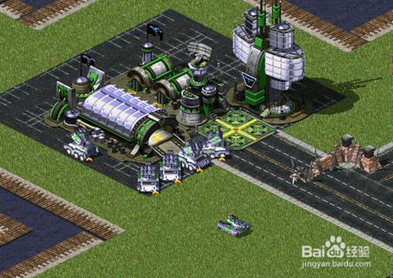

这次我们讲的设计模式叫做 Factory， 工厂模式
那么工厂模式是什么呢？
所谓工厂，当然是生产内容的地方。 这里有一个重要的概念请大家记住： 工厂生产的，一般是一个完整的产品。
如果是一个半成品，需要我们后续加工，那工厂模式的意义就没有了。
举个简单的例子
手机工厂，生产的各种各样的手机，当你把产品拿到手以后，你可以直接使用
并不需要知道这台手机是如何生产的。手机工厂生产出来的手机在出厂时都是一模一样的。
我们玩RedAlert（红色警戒）这款即时战略游戏时，一定会建造一个坦克工厂。
就像这样：

这个工厂里可以生产若干类型的坦克，比如幻影坦克，光棱坦克，爱国者导弹车等。
我们想得到一辆坦克，代码大概是这样的：
var tank01 = TankFactory.create("幻影");
var tank02 = TankFactory.create("光棱");
我们不需要知道坦克的创建过程。 坦克工厂的内部结构大概是这样：
var TankFactory = {
tanklist : {
"幻影" : function(){ //...... },
"光棱" : function(){ //...... }
},
create : function(type){
return new this.tanklist[type]();
}
};
当然，tanklist是不能随便让别人修改的，需要做成私有变量，于是改造一下代码
var TankFactory = (function(){
var tanklist = {
"幻影" : function(){ //...... },
"光棱" : function(){ //...... }
}
return {
create : function(type){
return new tanklist[type]();
}
};
})();
一个典型的工厂模式就是：
var oDiv = document.createElement("div");
var oSpan = document.createElement("span");
好处有两点：
第一，可以比较容易的批量化生产
第二，封装生产过程，让生产变得容易
当遇到一个构建起来比较复杂的对象时，就比较适合用工厂模式。
因此，往大了说，其实每个构造函数都是一个工厂。
例如：
var obj = new Object();
var now = new Date();
实际上，这些都是工厂，它们都可以批量生产，并且隐藏了复杂的构建细节。
实战应用：
著名的jQUeryUI框架中，有这样一个功能：
$("#dia").dialog();
如此简单的一句话，便可以生成一个经过美化的弹出层。
我们下面来自己写一个简单的DOM工厂。
var DomFactory = (function(){
var domlist = {
"LINK" : function(){
return document.createElement("a");
},
"BTN" : function(){
return document.createElement("button");
},
"IMG" : function(){
return document.createElement("img");
}
}
return {
create: function(type){
return new domlist[type]();
}
};
})();
//使用的时候像这样：
var link = DomFactory.create("LINK");
link.href = "http://www.xxxxxx";
不过这种写法可能跟平时用起来好像差别不大;
var link = document.createElement("a");
下面我们把这个工厂，改造一下，做一些复杂的事情。
var DomFactory = (function(){
var domlist = {
"LINKIMG" : function(href, src){
var link = document.createElement("a");
//去掉默认下划线
link.style["text-decoration"] = "none";
link.href = href;
var img = document.createElement("img");
img.src = src;
link.appendChild(img);
return link;
},
"LINKBTN" : function(href, text){
var link = document.createElement("a");
//去掉默认下划线
link.style["text-decoration"] = "none";
link.href = href;
var btn = document.createElement("button");
btn.innerHTML = text;
link.appendChild(btn);
return link;
}
}
return {
create: function(type){
return new domlist[type](...Array.from(arguments).slice(1));
}
};
})();
使用方法如下：
var linkbtn = DomFactory.create("LINKBTN", "http://www.china.com", "中国");
这样一来我们便得到了一个由超链接包裹着的按钮了。
这就是工厂方法带给我们的好处。